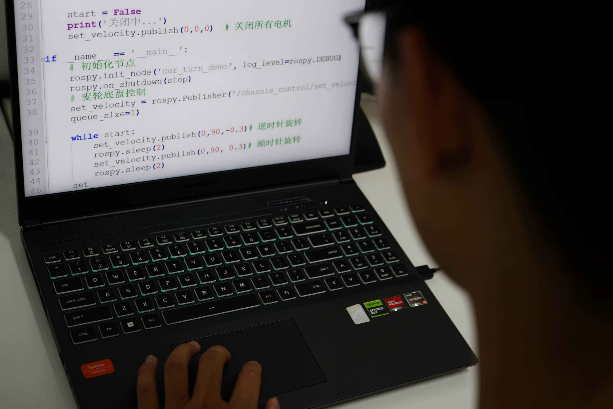

破局者 —— 新型物流模式 引领物流新时代
物流小车热力图建模演示
这是我们的热力图演示视频，展示了物流小车的空间建模能力。
我们的小车可以扫描房屋进行建模，通过移动产生位置坐标信号，发送到后台程序处理后实时显示热力图效果。这一技术实现了物流环境的数字化映射，为智能路径规划和资源调度提供了数据基础。
开发团队代码更新过程
此图展示了我们的队员在进行系统代码的更新与优化。
开发团队持续对物流小车的控制系统、数据传输协议和后台管理系统进行迭代升级。通过模块化设计和版本控制管理，我们确保了代码的可维护性和系统的稳定性，同时不断引入前沿技术提升物流解决方案的智能化水平。
开发过程实拍
